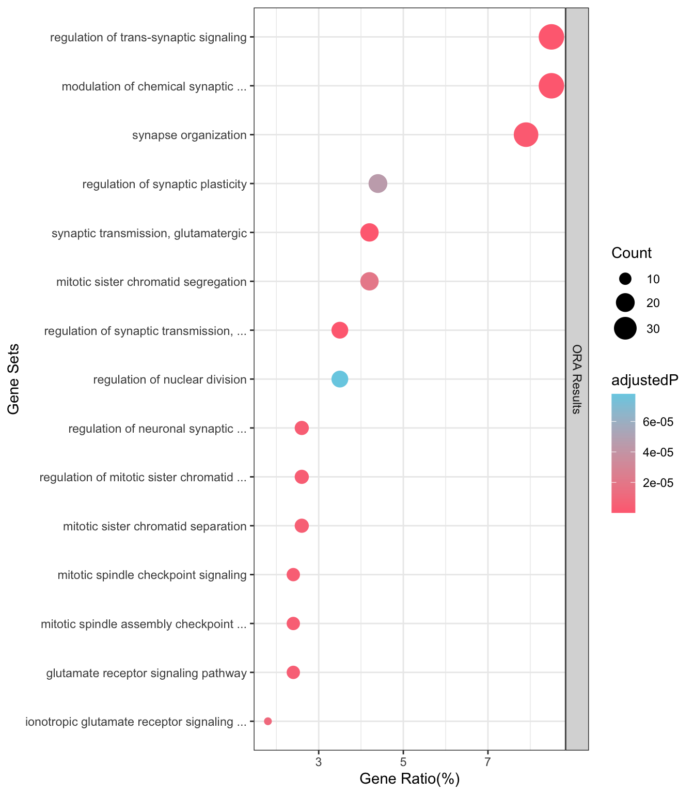

egt_plot_results(ora_result)ℹ Use Default P-adjust cut-off 0.05. You can pass `P.adj=xxx` arugument to filter. ! You are drawing origin results, for better result you can re-cluster it by egt_recluster_analysis()
Because of the messy result table is hardly to read, EnrichGT help you convert it into pretty gt HTML tables. This only supports the re-enriched results.
You can simple input the object name of re-enriched object or fused object, to show the table.

This just shows the second slot inside the EnrichGT_obj object. The second slot - gt_object is a pure object of gt package, you can use any function on it, like:
re_enrichment_results@gt_object |> gt_save("test.html") # Save it use basic gt functions. For further usage of gt package, please refer to https://gt.rstudio.com/articles/gt.html.
See re-enrichment example for further demo.
HTML gt table satisfied most of things, but for others. Though we don’t want this package become complex (i.e., you can simple draw your figure using ggplot2 for enriched tables by yourself.) But we still provide limited figure ploting functions.
The Dot Plot provide basic viewing of results. So it supports both simple enrichment result data.frame and re-enriched egt_object.
You can adjust this figure by these params:
ntop: Show top N in each cluster. In default, for origin enriched result, showing top 15; for re-clustered object, showing top 5 in each cluster.showIDs: bool, show pathway IDs or not. Default is FALSEmax_len_descript: the label format length, default as 40.P.adj: If pass an origin data.frame from original enriched result, you can specify the P-adjust value cut off. If is null, default is 0.05. When passing EnrichGT_obj, this filter is previously done by egt_recluster_analysis.low.col: the color for the lowesthi.col: the color for the highestegt_plot_results(ora_result)ℹ Use Default P-adjust cut-off 0.05. You can pass `P.adj=xxx` arugument to filter. ! You are drawing origin results, for better result you can re-cluster it by egt_recluster_analysis()
egt_plot_results(resGSEA)ℹ Use Default P-adjust cut-off 0.05. You can pass `P.adj=xxx` arugument to filter. ! You are drawing origin results, for better result you can re-cluster it by egt_recluster_analysis()
egt_plot_results(re_enrich)Since version 0.8.6, EnrichGT provides a function called egt_plot_gsea() to help users to get typical ranking plots. If you pass a pathway name to the first param of this function, egt_plot_gsea() will return a ranking plot of single pathway. For multiple pathway, you need to subset the data.frame result of egt_gsea_analysis().
The param contains:
x: A GSEA result object. Can be either:
genes and database should be the same as you doing egt_gsea_analysis()data.frame
You can see the result figure, we need the NES and p-values for display.
You need to prepare your favourite pathway’s name:
egt_plot_gsea() is the name of this pathway, subset from resGSEA.
[1] "character"
[1] "regulation of postsynaptic membrane potential"And then using egt_plot_gsea() for drawing. The other params should be the same as you provided in origin GSEA analysis.
egt_plot_gsea(resGSEA$Description[1],
genes = genes_with_weights(genes = DEGexample$...1,
weights = DEGexample$log2FoldChange),
database = database_GO_BP(org.Hs.eg.db))✔ success loaded database, time used : 16.2828590869904 sec.
If you want to plot this plot, remember to filter the GSEA results to ~10 to ~20, you can base on NES or p-values. This is to avoid too many loading to this plotting.
You need to subset the origin GSEA result data.frame according to NES or p-val to gain your targets. In this demo, we choose row 1 to row 8.
data.frame. Please subset it to avoid too many results and the waste of time.
abs(NES)>1) and p-value, too avoiding too many outputs and wasting.
[1] "data.frame"
ID Description
1 GO:0060078 regulation of postsynaptic membrane potential
2 GO:0007216 G protein-coupled glutamate receptor signaling pathway
3 GO:0050907 detection of chemical stimulus involved in sensory perception
4 GO:0050906 detection of stimulus involved in sensory perception
5 GO:0035249 synaptic transmission, glutamatergic
6 GO:0051966 regulation of synaptic transmission, glutamatergic
7 GO:0061982 meiosis I cell cycle process
8 GO:0007628 adult walking behavior
ES NES pvalue p.adjust
1 0.5640120 1.940093 6.130789e-06 0.0002369021
2 0.8399130 1.925430 2.383813e-04 0.0045898643
3 0.7673726 1.920430 2.555795e-04 0.0048542780
4 0.5936136 1.909406 3.970339e-05 0.0011294645
5 0.5603341 1.906212 1.066657e-05 0.0003806676
6 0.5807585 1.876372 9.302572e-05 0.0023478519
7 0.5532139 1.868648 3.637422e-05 0.0010621251
8 0.7170162 1.859178 6.892355e-04 0.0099857298
core_enrichment
1 GRIK3/HCN1/GRM1/GRM5/GRIA4/GRIN2B/NRXN1/GRID2/RIMS2/HTR3A/GRIN2D/CELF4/GRIN1/GABRB1/GRIK2/TBC1D24/MAPK8IP2/GABRD/CUX2/NLGN1/GRIK5/GRIN2A/NETO1/STX1A/GRIN3B/GRID1/GRIK1
2 GRIK3/GRM1/GRM5/GRM8/GRM4/GRM3
3 OR51E1/CST1/OR51E2/AZGP1/TAS1R1/OR7C1/ASIC3/PIGR/PKD2L1/CNGB1/PKD1L3/GNAT2
4 OR51E1/CST1/OR51E2/COL11A1/AZGP1/PPEF1/CACNB4/GRIK2/TAS1R1/EYS/OR7C1/REEP6/ASIC3/SEMA5B/PIGR/PKD2L1/CNGB1/NR2F6/SCN11A/NTRK1/PKD1L3/GNAT2
5 GRIK3/UNC13C/GRM1/CACNG5/GRM5/GRM8/GRIA4/GRIN2B/NRXN1/GRID2/CACNB4/GRIN2D/GRIN1/GRM4/GRIK2/UNC13A/MAPK8IP2/UCN/DGKI/ABCC8/ATP1A2/NLGN1/GRIK5/GRM3/GRIN2A/SYT1/GRIN3B/GRID1/GRIK1/SLC17A7/GRIN2C/CDH2/NTRK1/CNR1
6 GRIK3/GRM1/CACNG5/GRM5/GRM8/GRIN2B/NRXN1/GRIN2D/GRIN1/GRM4/GRIK2/UNC13A/MAPK8IP2/UCN/DGKI/ATP1A2/NLGN1/GRM3/GRIN2A/SYT1/GRIK1/GRIN2C/CDH2/NTRK1/CNR1
7 SPATA22/KASH5/BRDT/RAD54B/PLK1/SPDYA/CDC20/CDC25C/NDC80/HFM1/PKMYT1/TOP2A/TRIP13/CCNE1/BRIP1/CENPX/RAD51AP1/IHO1/RAD54L/CKS2/AURKA/BRCA2/PTTG1/MOV10L1/M1AP/SHOC1/BRME1/FMN2/RAD51/SIRT7/RAD51C/ESPL1/CCNB2
8 ZIC1/CNTN2/CACNB4/UCHL1/CEND1/TRHAnd then using egt_plot_gsea() for drawing. The other params should be the same as you provided in origin GSEA analysis.
egt_plot_gsea(resGSEA[1:8,],
genes = genes_with_weights(genes = DEGexample$...1,
weights = DEGexample$log2FoldChange),
database = database_GO_BP(org.Hs.eg.db))✔ Use cached database: GO_BP_org.Hs.eg.db
Before version 0.8.6, UMAP plot is provided in re-enriched egt_object, to show the dimensionality reduction view of enriched results.
A word frequency matrix represents the frequency of words or tokens across different documents or text samples. Each row corresponds to a document, and each column represents a word or token, with the cell values indicating the frequency of the respective word in that document.However, high-dimensional data like word frequency matrices can be challenging to interpret directly. To make such data easier to analyze, we can reduce its dimensionality and visualize the patterns or clusters in a 2D or 3D space. UMAP (Uniform Manifold Approximation and Projection) is a powerful, non-linear dimensionality reduction technique widely used for this purpose.
But since 0.8.6, because umap and ggrepel have too many dependencies, and this function is not nesessary in most of cases. We now don’t support it. If you still needs this figure, you can execute following code.
library(umap)
library(ggrepel)
mat<-x@document_term_matrix
umap_result <- umap::umap(mat)
umap_df <- data.frame(ID=rownames(umap_result[["layout"]]),
UMAP1 = umap_result$layout[, 1],
UMAP2 = umap_result$layout[, 2])
udf<-x@enriched_result |> left_join(umap_df,by="ID")
fig<-ggplot(udf, aes(x = UMAP1, y = UMAP2, color = Cluster)) +
geom_point(size = 2) +
geom_text_repel(aes(label = Description),
size = 3,
max.overlaps = 20,
box.padding = 0.3,
point.padding = 0.2) +
labs(title = "Enrichment Results",
x = "UMAP1", y = "UMAP2") +
theme_classic()
fig